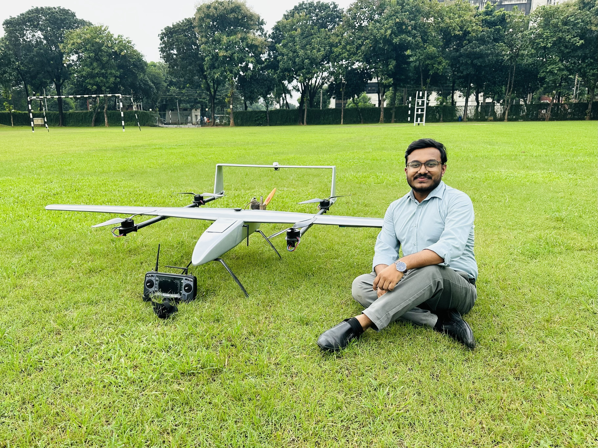
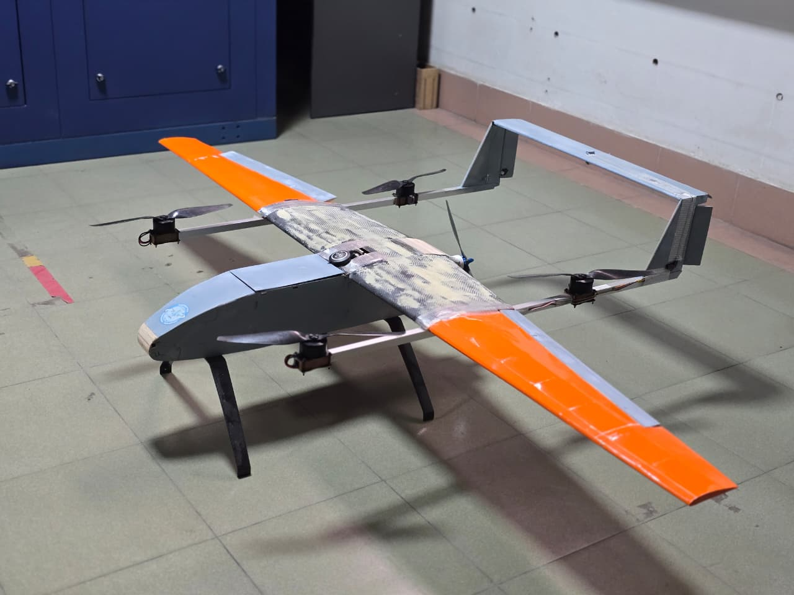
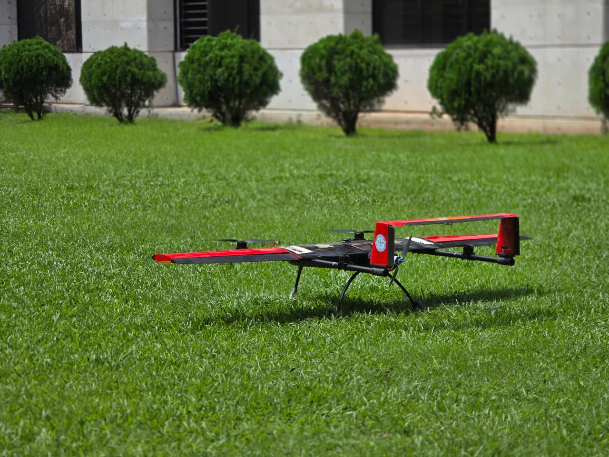
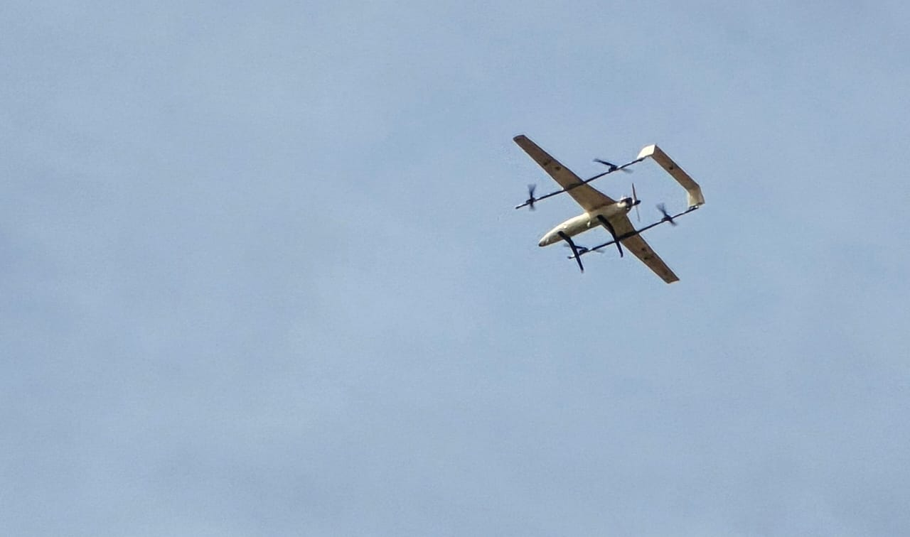
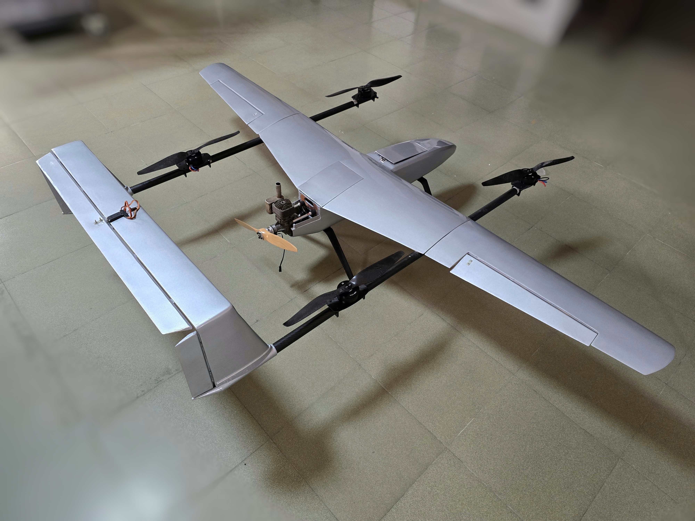
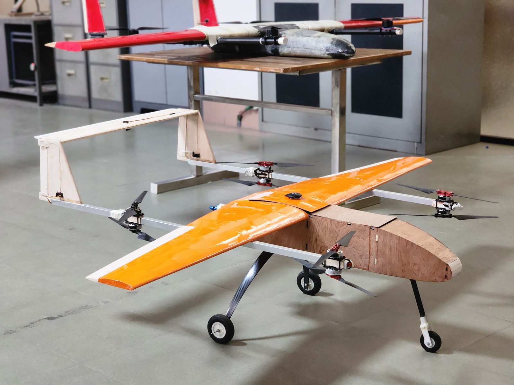
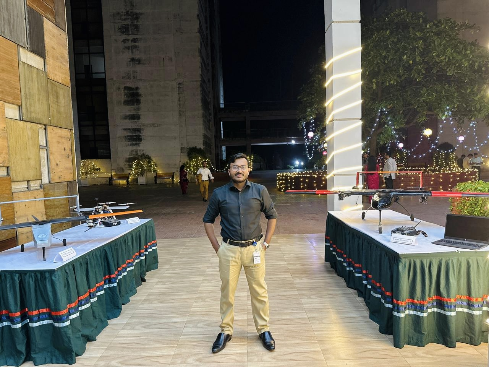

Fixed-Wing VTOL UAV for Hill-Terrain Surveillance
Six-month R&D programme building a piston-engine-powered fixed-wing Vertical Take-Off and Landing UAV. Across four prototype generations, the platform progressed from concept validation through to a mission-ready surveillance aircraft engineered for hill-terrain operational environments.
The Mission & Engineering Approach
The mission profile: a UAV capable of operating in hill terrain — launching and recovering from confined unprepared areas (no runways), while delivering the range and endurance characteristic of a fixed-wing platform. This combination drove the choice of a fixed-wing VTOL configuration: vertical take-off and landing for site flexibility, fixed-wing flight for efficient cruise.
The propulsion choice was unconventional — a piston engine rather than electric. This was a deliberate engineering trade: piston propulsion delivers significantly longer endurance and tolerates field-refuelling in remote operations, at the cost of added complexity in vibration management, fuel system integration, and engine-mount design.
The R&D approach was iterative. Rather than attempting a single deliverable, the programme followed four progressive prototype generations, each addressing specific issues identified in the prior build. Key contributions across the programme:
- Validating piston-engine VTOL feasibility through P1 flight testing.
- Refining transition-mode handling and stability through P2.
- Integrating mission-relevant payload capability in P3.
- Delivering a mission-ready platform meeting all programme specifications in P4.

Four Prototype Generations
Each prototype was a self-contained engineering build, structured to test and resolve specific design questions before progressing.
The first build was a proof-of-concept platform answering a single question: can a piston-engine fixed-wing VTOL configuration achieve a stable hover-to-cruise transition? Geometry was kept simple, the airframe was deliberately conservative, and instrumentation focused on capturing transition-mode behaviour.


Building directly on the P1 lessons, this iteration addressed stability margins and transition-mode handling. The airframe geometry was refined, control surface authorities were re-tuned, and the propulsion-to-airframe interface was reworked to reduce vibration coupling.
The mid-programme upgrade. With the airframe and transition behaviour stabilised, focus shifted to delivering mission capability — payload integration, hill-terrain operational requirements, and the operational envelope needed for real surveillance missions.


The final platform. P4 consolidated the lessons from all earlier iterations into a deliverable that met the programme's full specification — hill-terrain surveillance capability, piston-engine endurance, and a complete VTOL operational envelope.
Workshop & Build Phase
The reality of any prototyping programme — workshop assembly, structural testing, electronics integration, and field preparation. A photo dump from the build phase.


Flight Test Videos
Recorded footage of flight tests across the four prototype generations.